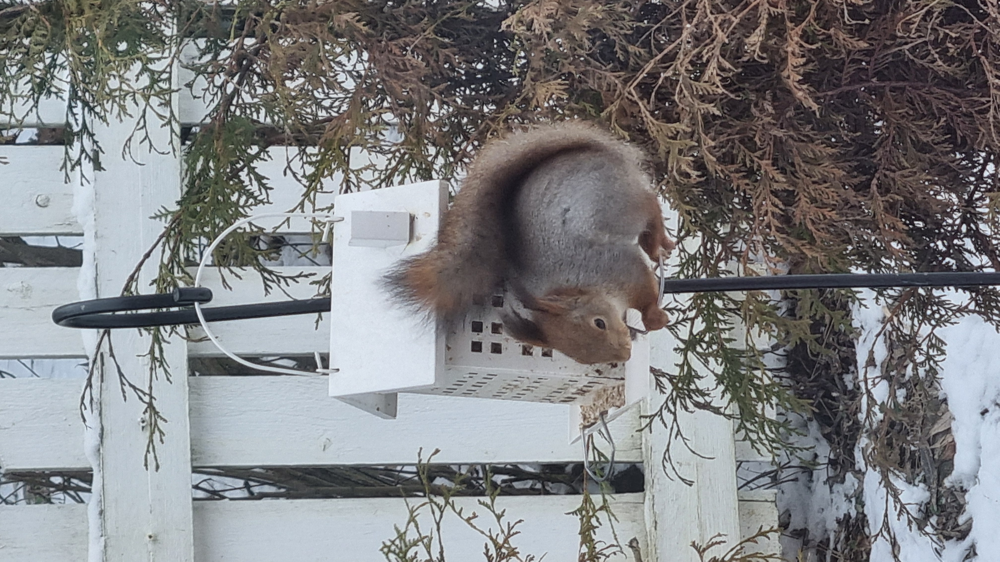
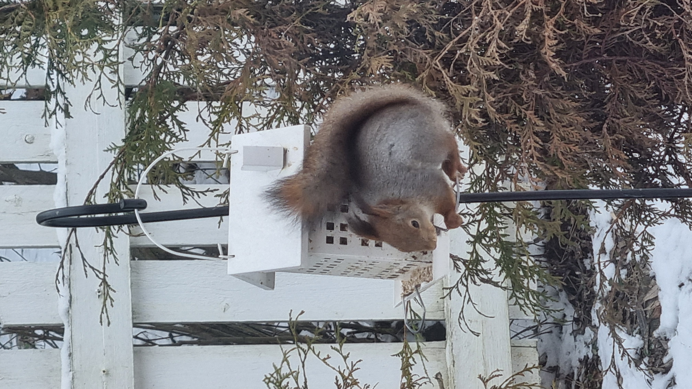

Järkyttävimmät puutarhamokat
Tämä on tarina siitä, kun oravat valloittivat puutarhani.
Aiheita puutarhanhoidosta
Olen tällä hetkellä:Epäröijä
Tämä on tarina siitä, kun oravat valloittivat puutarhani.
Puutarhani upeimpia juttuja on ollut se, kun olen saanut tehdä pikkutellen siitä omanlaiseni. Syksyllä nautin suuresti siitä, että voin poimia omasta puutarhasta välipaloja kuten omenia.